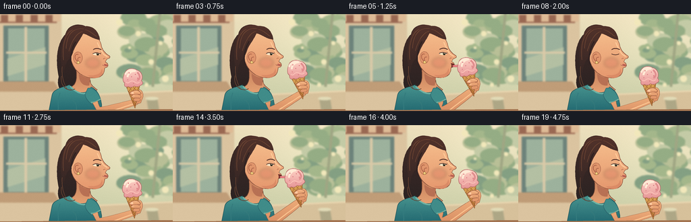
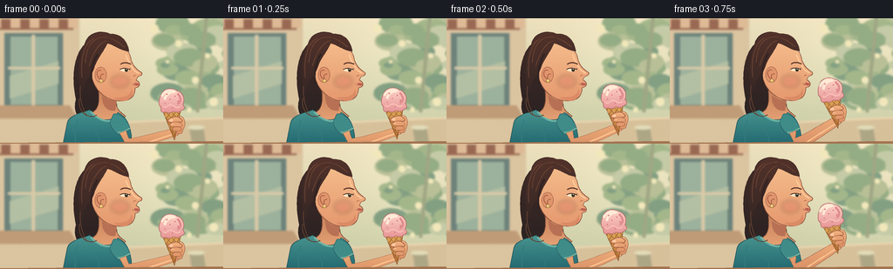

CODING AGENTS AS PIXEL WORLD MODELS
traex/GPT-6.1-Sol · motion_rationality_0002
点击播放 · 原生 RGB 像素
逐轮保存的候选
回放视频、检查图与代码变化。
每份候选均可单独播放。实际图片检查记录在下方工具轨迹中。
候选 01播放与检查图
点击播放 · 原生 RGB 像素


展开代码变化
--- 上一保存版本
+++ 本次保存版本
@@ -0,0 +1,210 @@
+from pathlib import Path
+import math
+import numpy as np
+from PIL import Image, ImageDraw, ImageFilter
+import artifact_io
+
+ROOT = Path(__file__).resolve().parent
+W,H,S = 256,144,4
+
+# Cubic curves, drawn at four times delivery resolution.
+def curve(commands):
+ points=[]; current=(0,0); first=None
+ for c in commands:
+ if c[0]=='M':
+ current=(c[1],c[2]); first=current; points.append(current)
+ elif c[0]=='L':
+ current=(c[1],c[2]); points.append(current)
+ elif c[0]=='C':
+ a=np.array(current); b=np.array(c[1:3]); d=np.array(c[3:5]); e=np.array(c[5:7])
+ for t in np.linspace(0,1,22)[1:]:
+ q=(1-t)**3*a+3*(1-t)**2*t*b+3*(1-t)*t*t*d+t**3*e
+ points.append(tuple(q))
+ current=tuple(e)
+ elif c[0]=='Q':
+ a=np.array(current); b=np.array(c[1:3]); e=np.array(c[3:5])
+ for t in np.linspace(0,1,16)[1:]: points.append(tuple((1-t)**2*a+2*t*(1-t)*b+t*t*e))
+ current=tuple(e)
+ elif c[0]=='Z': points.append(first); current=first
+ return points
+
+class Paint:
+ def __init__(self,im,transform=None):
+ self.im=im; self.d=ImageDraw.Draw(im); self.trans=transform or (lambda x,y:(x,y))
+ def pts(self,p): return [(self.trans(x,y)[0]*S,self.trans(x,y)[1]*S) for x,y in p]
+ def poly(self,p,fill,outline=None,width=.6):
+ q=self.pts(p); self.d.polygon(q,fill=fill)
+ if outline: self.d.line(q+[q[0]],fill=outline,width=max(1,round(width*S)),joint='curve')
+ def path(self,c,fill=None,line=None,width=.6):
+ p=curve(c)
+ if fill:self.poly(p,fill)
+ if line:self.d.line(self.pts(p),fill=line,width=max(1,round(width*S)),joint='curve')
+ def line(self,p,color,width=1):self.d.line(self.pts(p),fill=color,width=max(1,round(width*S)),joint='curve')
+ def ellipse(self,box,fill,outline=None,width=.6):
+ x0,y0,x1,y1=box
+ p=[((x0+x1)/2+(x1-x0)/2*math.cos(t),(y0+y1)/2+(y1-y0)/2*math.sin(t)) for t in np.linspace(0,2*math.pi,90)]
+ self.poly(p,fill,outline,width)
+ def grad(self,commands,top,bottom,outline=None,width=.6):
+ p=curve(commands); q=self.pts(p); mask=Image.new('L',self.im.size); md=ImageDraw.Draw(mask);md.polygon(q,fill=255)
+ ymin=min(y for x,y in q); ymax=max(y for x,y in q)
+ yy=np.arange(H*S)[:,None]; a=np.clip((yy-ymin)/max(ymax-ymin,1),0,1)
+ col=np.array(top)[None,:]*(1-a)+np.array(bottom)[None,:]*a
+ rgb=np.broadcast_to(col[:,None,:],(H*S,W*S,3)).astype('uint8').copy()
+ self.im.paste(Image.fromarray(rgb), (0,0), mask)
+ if outline:self.d.line(q+[q[0]],fill=outline,width=max(1,round(width*S)),joint='curve')
+
+
+def background():
+ yy,xx=np.mgrid[0:H*S,0:W*S]; t=yy/(H*S)
+ a=np.array([237,224,189]);b=np.array([199,205,166])
+ arr=a[None,None,:]*(1-t[:,:,None])+b[None,None,:]*t[:,:,None]
+ glow=np.exp(-((xx/S-211)**2+(yy/S-38)**2)/4500)
+ arr=np.clip(arr+glow[:,:,None]*12,0,255)
+ im=Image.fromarray(arr.astype('uint8'));p=Paint(im)
+ # Sunlit ice-cream cafe terrace, deliberately out of focus.
+ p.poly([(0,0),(91,0),(91,144),(0,144)],(219,196,160))
+ p.poly([(5,17),(72,17),(72,102),(5,102)],(109,131,123))
+ p.poly([(12,21),(66,21),(66,99),(12,99)],(157,178,157))
+ p.poly([(11,66),(67,49),(67,75),(11,92)],(180,192,163))
+ p.line([(38,19),(38,101)],(218,202,168),4)
+ p.line([(9,57),(69,57)],(218,202,168),3)
+ p.poly([(0,100),(80,100),(89,115),(0,115)],(192,157,120))
+ p.poly([(0,1),(85,1),(84,13),(0,13)],(154,105,83))
+ for x in range(-10,88,22):p.poly([(x,0),(x+11,0),(x+11,11),(x,11)],(222,187,150))
+ rng=np.random.default_rng(4)
+ for i in range(60):
+ x=rng.uniform(181,280); y=rng.uniform(-20,98); r=rng.uniform(5,20)
+ c=[(149,173,133),(164,183,139),(185,192,151),(132,160,131),(196,203,166)][i%5]
+ p.ellipse((x-r,y-r*.6,x+r,y+r*.6),c)
+ p.line([(237,-5),(226,108)],(160,166,132),4)
+ for x,y,r in [(205,29,4),(238,43,3),(192,50,2),(224,71,4),(177,12,5),(245,96,5),(217,105,3)]:
+ p.ellipse((x-r,y-r,x+r,y+r),(242,232,187))
+ p.poly([(78,121),(256,113),(256,144),(78,144)],(215,193,155))
+ p.line([(83,122),(256,114)],(239,219,181),2)
+ p.poly([(217,125),(233,125),(236,144),(220,144)],(174,167,134))
+ p.ellipse((215,123,235,128),(226,220,184))
+ im=im.filter(ImageFilter.GaussianBlur(1.1*S))
+ return im
+
+BG=background()
+
+def smooth(x): return x*x*(3-2*x)
+def sample_key(t,keys):
+ for (a,v),(b,w) in zip(keys[:-1],keys[1:]):
+ if a<=t<=b:
+ f=smooth((t-a)/(b-a)); return v+(w-v)*f
+ return keys[0][1] if t<keys[0][0] else keys[-1][1]
+
+
+def render(i):
+ t=i/4
+ lift=sample_key(t,[(0,0),(.25,.06),(1,1),(1.5,1),(2.2,0),(2.65,0),(3.3,1),(3.85,1),(4.65,0),(5,0)])
+ lick=sample_key(t,[(0,0),(.9,0),(1.13,1),(1.35,.7),(1.6,0),(3.15,0),(3.4,1),(3.65,.8),(3.95,0),(5,0)])
+ im=BG.copy();p=Paint(im)
+ breath=.24*math.sin(t*2.2)
+ # Loose hair silhouette behind neck and shoulders.
+ p.grad([('M',97,30),('C',84,43,82,69,87,93),('C',83,109,91,120,108,121),('C',126,125,139,112,133,95),('C',147,64,152,29,129,19),('C',116,12,100,16,97,30),('Z',)],(66,43,39),(42,35,35))
+ # Neck and warm reflected shadow.
+ neck=[('M',113,80),('L',134,84),('C',132,101,133,105,144,112),('C',132,126,110,124,102,110),('C',114,105,114,98,113,80),('Z',)]
+ p.grad(neck,(199,128,91),(232,166,119),(126,76,57),.65)
+ p.path([('M',117,88),('C',124,94,129,95,134,93),('L',132,106),('C',123,107,117,102,117,88),('Z',)],(184,113,84))
+ # Shirt, soft seams, short sleeves.
+ p.grad([('M',103,105+breath),('C',94,109,81,110,77,120),('L',72,145),('L',151,145),('C',151,130,149,116,135,108),('C',129,121,111,119,103,105+breath),('Z',)],(72,148,143),(35,105,113),(37,88,91),.8)
+ p.path([('M',104,107),('C',113,119,130,122,138,112)],line=(111,179,165),width=2.2)
+ p.path([('M',89,117),('C',85,127,87,136,86,144)],line=(52,123,126),width=1.2)
+ p.path([('M',106,127),('C',114,131,114,138,113,144)],line=(55,123,124),width=.7)
+ p.path([('M',130,110),('C',138,109,146,115,149,127),('L',136,134),('C',131,130,127,126,126,119),('Z',)],(64,140,137),(43,102,108),.7)
+ p.path([('M',135,131),('C',141,131,146,128,149,126)],line=(124,180,160),width=1.4)
+ # Head tilts a little closer, keeping the anatomy coherent.
+ hx=1.4*lift; hy=-.45*lift
+ face=Paint(im,lambda x,y:(x+hx,y+hy))
+ face.grad([('M',116,28),('C',133,23,148,34,150,46),('C',151,52,155,58,162,62),('Q',165,65,158,67),('L',156,71),('Q',160,73,160,76),('Q',160,79,155,80),('C',155,90,149,95,139,95),('C',124,95,112,86,107,73),('C',100,58,102,39,116,28),('Z',)],(245,188,139),(230,153,111),(137,81,60),.65)
+ face.path([('M',137,91),('C',147,90,150,87,151,81),('Q',154,90,146,94),('Q',138,97,130,91)],fill=(219,139,102))
+ face.path([('M',144,42),('C',147,49,150,55,154,60),('L',159,63)],line=(255,204,154),width=1.6)
+ face.ellipse((109,56,122,74),(224,149,108),(149,86,63),.6)
+ face.path([('M',116,60),('C',109,58,110,69,116,70),('Q',114,64,119,64)],line=(168,96,70),width=.9)
+ face.ellipse((114,70,118,74),(233,190,110),(161,119,68),.5)
+ face.ellipse((115.2,70.4,116.6,72),(255,228,157))
+ # Restrained cheek color, built as a translucent soft wash.
+ blush=Image.new('RGBA',im.size);bp=Paint(blush,lambda x,y:(x+hx,y+hy));bp.ellipse((127,65,148,80),(209,103,89,62));blush=blush.filter(ImageFilter.GaussianBlur(2.3*S)); im.paste(blush,(0,0),blush)
+ face=Paint(im,lambda x,y:(x+hx,y+hy))
+ face.path([('M',138,53),('C',142,50,147,51,150,53)],line=(84,50,41),width=1.3)
+ blink=1 if i in [8,18] else 0
+ if blink:
+ face.path([('M',138,59),('Q',144,62,149,59)],line=(83,52,44),width=1)
+ else:
+ face.path([('M',137.5,58.7),('Q',143,55.8,149,59.1),('Q',144,62.9,138,60),('Z',)],fill=(255,233,199))
+ face.ellipse((143,57.5,146.7,61.4),(78,68,47))
+ face.ellipse((144.1,58,146,61),(38,39,32))
+ face.ellipse((144.5,58,145.5,59),(255,237,204))
+ face.path([('M',137.5,58.7),('Q',143,55.8,149,59.1)],line=(73,48,42),width=.95)
+ face.line([(148,58.4),(149.7,57.7)],(73,48,42),.65)
+ face.path([('M',156,66),('Q',154,65,153,67)],line=(158,90,64),width=.6)
+ # Lips open only during an intentional lick.
+ if lick>.03:
+ face.path([('M',154.4,73.8),('Q',158,73.1,160.2,75.4),('Q',161,78.8,155.2,80),('Q',156.5,76,154.4,73.8),('Z',)],fill=(110,48,42))
+ ext=8.6*lick
+ face.path([('M',157.5,76.3),('C',160,76.1,161+ext,75.6,161+ext,77.3),('C',161+ext,79.2,161,79.4,157.4,78.7),('Z',)],fill=(238,123,131),line=(173,74,79),width=.45)
+ face.path([('M',159,77),('Q',162+ext*.65,76.9,160+ext,77.4)],line=(255,176,170),width=.6)
+ else:
+ face.path([('M',154,74.4),('Q',158,74,160,76),('Q',157,77,154,76.5),('Z',)],fill=(187,94,81))
+ face.path([('M',154.2,76.4),('Q',158,78.5,159.3,77.1)],line=(248,166,131),width=1.2)
+ face.path([('M',151.5,75.3),('Q',155,77.7,159.4,76.8)],line=(126,66,56),width=.55)
+ # Hair cap and individual swept strands.
+ face.grad([('M',105,64),('C',99,69,95,77,95,88),('C',88,74,90,50,95,36),('C',98,20,111,13,126,18),('C',138,17,146,25,148,38),('C',139,38,130,30,123,29),('C',118,40,111,47,108,57),('L',105,64),('Z',)],(83,51,43),(54,39,37))
+ for c in [ [('M',98,51),('C',99,29,109,20,124,22)], [('M',94,68),('C',92,48,96,28,108,23)], [('M',102,55),('C',108,34,117,27,122,26)], [('M',126,23),('C',134,25,138,30,143,33)], [('M',92,78),('C',91,97,96,104,99,111)] ]:
+ face.path(c,line=(114,72,52),width=.85)
+ face.path([('M',112,41),('C',105,52,103,67,106,75)],line=(49,35,34),width=2)
+ face.path([('M',91,92),('C',88,110,104,116,111,111)],line=(98,64,47),width=1)
+ # Cone and hand use one rigid local coordinate system.
+ cx=196-16.7*lift; cy=94-16.6*lift
+ theta=math.radians(-5-9*lift); co=math.cos(theta); si=math.sin(theta)
+ def tr(x,y): return (cx+x*co-y*si,cy+x*si+y*co)
+ wrist=tr(4,36); elbow=(150-3*lift,145-2*lift)
+ # Tapered forearm and elbow, joint motion driven by the wrist.
+ ex,ey=elbow;wx,wy=wrist; vx=wx-ex;vy=wy-ey;length=math.hypot(vx,vy);nx=-vy/length;ny=vx/length
+ arm=[('M',137,132),('C',140,136,ex-6,ey+3,ex+nx*7,ey+ny*7),('C',ex+10+nx*6,ey-3+ny*6,wx+nx*5,wy+ny*5,wx+nx*4.5,wy+ny*4.5),('L',wx-nx*4.5,wy-ny*4.5),('C',wx-9-nx*5,wy+4-ny*5,ex+5-nx*7,ey-ny*7,ex-nx*7,ey-ny*7),('C',145,132,145,129,145,129),('Z',)]
+ p.grad(arm,(239,174,123),(215,140,99),(149,92,64),.6)
+ p.path([('M',ex+nx*4,ey+ny*4),('Q',(ex+wx)/2+nx*3,(ey+wy)/2+ny*3,wx+nx*2,wy+ny*2)],line=(250,194,142),width=1.7)
+ c=Paint(im,tr)
+ # Palm behind the cone, visible at the right edge.
+ c.grad([('M',6,19),('C',12,18,15,24,13,31),('L',9,39),('Q',4,41,-1,36),('L',-3,27),('Z',)],(242,178,127),(221,145,101),(150,89,63),.6)
+ # Baked waffle cone, narrow tip and a lattice clipped to its silhouette.
+ cone=[('M',-10.4,11.5),('Q',0,9.5,10.3,11.5),('L',0,46),('Z',)]
+ c.grad(cone,(225,171,90),(176,106,50),(144,87,45),.65)
+ lattice=Image.new('RGBA',im.size);lc=Paint(lattice,tr)
+ for k in range(-28,38,6):
+ lc.line([(k,9),(k+30,47)],(152,91,43,200),.65)
+ lc.line([(k,9),(k-30,47)],(153,93,47,190),.65)
+ lc.line([(k+.8,9),(k+30.8,47)],(247,198,118,180),.45)
+ mask=Image.new('L',im.size);ImageDraw.Draw(mask).polygon(c.pts(curve(cone)),fill=255)
+ alpha=np.minimum(np.asarray(lattice.getchannel('A')),np.asarray(mask));lattice.putalpha(Image.fromarray(alpha));im.paste(lattice,(0,0),lattice)
+ c=Paint(im,tr)
+ c.path([('M',-10.3,11.4),('Q',0,14.3,10.2,11.4)],line=(249,206,128),width=1.8)
+ # Strawberry ice cream: an irregular scooped dome rather than a perfect sphere.
+ shrink=.38*(i>=7)+.45*(i>=16)
+ scoop=[('M',-12+shrink,7),('C',-16,4,-13,-4,-10,-8),('C',-7,-14,2,-15,8,-10),('C',14,-8,17,0,13,6),('Q',17,11,11,13),('Q',6,16,2,13),('Q',-3,16,-7,13),('Q',-14,15,-12+shrink,7),('Z',)]
+ c.grad(scoop,(255,213,199),(231,150,151),(179,107,104),.65)
+ c.path([('M',-10,-5),('C',-8,-11,0,-12,5,-9),('C',-1,-10,-6,-6,-7,-1)],line=(255,235,214),width=2.8)
+ c.path([('M',8,-7),('C',13,-1,11,4,7,5)],line=(225,141,142),width=2.5)
+ c.path([('M',-10,6),('Q',-7,9,-4,6),('Q',0,4,4,8),('Q',7,10,10,8)],line=(255,200,188),width=1.1)
+ for x,y,r in [(-4,-7,.7),(5,-4,.65),(-7,3,.55),(8,2,.7),(1,9,.6),(-1,-1,.6)]:c.ellipse((x-r,y-r,x+r,y+r),(215,120,126))
+ # Fingers lie across the cone so it remains securely held throughout.
+ c.grad([('M',9,22),('C',6,19,2,19,-3,21),('Q',-7,22,-5,25),('C',-2,27,3,25,7,26),('C',10,27,13,25,9,22),('Z',)],(246,184,134),(226,153,107),(158,94,68),.65)
+ c.path([('M',8,27),('C',5,25,0,25,-3,27),('Q',-5,29,-2,30),('L',6,31),('Q',12,32,10,28),('Z',)],fill=(231,161,114),line=(158,94,68),width=.55)
+ c.path([('M',7,32),('Q',0,30,-1,33),('Q',-2,36,6,36),('Q',10,36,9,33),('Z',)],fill=(226,152,107),line=(158,94,68),width=.5)
+ c.path([('M',-4,23),('Q',-2,21,0,22),('L',0,24),('Q',-2,25,-4,23),('Z',)],fill=(253,204,164))
+ c.path([('M',-2,28),('Q',0,27,1,28)],line=(253,199,151),width=.8)
+ # A thin foreground table edge grounds the portrait.
+ p=Paint(im)
+ p.poly([(0,143),(256,141),(256,144),(0,144)],(163,116,81))
+ im=im.resize((W,H),Image.Resampling.LANCZOS)
+ # Subtle print-like texture, locked to the image rather than flickering.
+ arr=np.asarray(im).astype(float)
+ rng=np.random.default_rng(12); noise=rng.normal(0,.34,(H,W,1))
+ return np.clip(arr+noise,0,255).astype(np.uint8)
+
+if __name__=='__main__':
+ frames=np.stack([render(i) for i in range(20)])
+ artifact_io.save(frames,ROOT)
+ print('Saved',frames.shape,frames.dtype)
可观测工具轨迹
实际执行的命令与返回图片。
命令 1exit 0
/bin/bash -lc 'ls -la; cat prompt.txt; cat GENERATION_RULES.md; cat task_spec.json'
命令 2exit 0
/bin/bash -lc "cat artifact_io.py; python - <<'PY'
import PIL,numpy
print('PIL',PIL.__version__)
PY"命令 3exit 0
/bin/bash -lc "cat > generate.py <<'PY'
from pathlib import Path
import math
import numpy as np
from PIL import Image, ImageDraw, ImageFilter
import artifact_io
ROOT = Path(__file__).resolve().parent
W,H,S = 256,144,4
# Cubic curves, drawn at four times delivery resolution.
def curve(commands):
points=[]; current=(0,0); first=None
for c in commands:
if c[0]=='M':
current=(c[1],c[2]); first=current; points.append(current)
elif c[0]=='L':
current=(c[1],c[2]); points.append(current)
elif c[0]=='C':
a=np.array(current); b=np.array(c[1:3]); d=np.array(c[3:5]); e=np.array(c[5:7])
for t in np.linspace(0,1,22)[1:]:
q=(1-t)**3*a+3*(1-t)**2*t*b+3*(1-t)*t*t*d+t**3*e
points.append(tuple(q))
current=tuple(e)
elif c[0]=='Q':
a=np.array(current); b=np.array(c[1:3]); e=np.array(c[3:5])
for t in np.linspace(0,1,16)[1:]: points.append(tuple((1-t)**2*a+2*t*(1-t)*b+t*t*e))
current=tuple(e)
elif c[0]=='Z': points.append(first); current=first
return points
class Paint:
def __init__(self,im,transform=None):
self.im=im; self.d=ImageDraw.Draw(im); self.trans=transform or (lambda x,y:(x,y))
def pts(self,p): return [(self.trans(x,y)[0]*S,self.trans(x,y)[1]*S) for x,y in p]
def poly(self,p,fill,outline=None,width=.6):
q=self.pts(p); self.d.polygon(q,fill=fill)
if outline: self.d.line(q+[q[0]],fill=outline,width=max(1,round(width*S)),joint='curve')
def path(self,c,fill=None,line=None,width=.6):
p=curve(c)
if fill:self.poly(p,fill)
if line:self.d.line(self.pts(p),fill=line,width=max(1,round(width*S)),joint='curve')
def line(self,p,color,width=1):self.d.line(self.pts(p),fill=color,width=max(1,round(width*S)),joint='curve')
def ellipse(self,box,fill,outline=None,width=.6):
x0,y0,x1,y1=box
p=[((x0+x1)/2+(x1-x0)/2*math.cos(t),(y0+y1)/2+(y1-y0)/2*math.sin(t)) for t in np.linspace(0,2*math.pi,90)]
self.poly(p,fill,outline,width)
def grad(self,commands,top,bottom,outline=None,width=.6):
p=curve(commands); q=self.pts(p); mask=Image.new('L',self.im.size); md=ImageDraw.Draw(mask);md.polygon(q,fill=255)
ymin=min(y for x,y in q); ymax=max(y for x,y in q)
yy=np.arange(H*S)[:,None]; a=np.clip((yy-ymin)/max(ymax-ymin,1),0,1)
col=np.array(top)[None,:]*(1-a)+np.array(bottom)[None,:]*a
rgb=np.broadcast_to(col[:,None,:],(H*S,W*S,3)).astype('uint8').copy()
self.im.paste(Image.fromarray(rgb), (0,0), mask)
if outline:self.d.line(q+[q[0]],fill=outline,width=max(1,round(width*S)),joint='curve')
def background():
yy,xx=np.mgrid[0:H*S,0:W*S]; t=yy/(H*S)
a=np.array([237,224,189]);b=np.array([199,205,166])
arr=a[None,None,:]*(1-t[:,:,None])+b[None,None,:]*t[:,:,None]
glow=np.exp(-((xx/S-211)**2+(yy/S-38)**2)/4500)
arr=np.clip(arr+glow[:,:,None]*12,0,255)
im=Image.fromarray(arr.astype('uint8'));p=Paint(im)
# Sunlit ice-cream cafe terrace, deliberately out of focus.
p.poly([(0,0),(91,0),(91,144),(0,144)],(219,196,160))
p.poly([(5,17),(72,17),(72,102),(5,102)],(109,131,123))
p.poly([(12,21),(66,21),(66,99),(12,99)],(157,178,157))
p.poly([(11,66),(67,49),(67,75),(11,92)],(180,192,163))
p.line([(38,19),(38,101)],(218,202,168),4)
p.line([(9,57),(69,57)],(218,202,168),3)
p.poly([(0,100),(80,100),(89,115),(0,115)],(192,157,120))
p.poly([(0,1),(85,1),(84,13),(0,13)],(154,105,83))
for x in range(-10,88,22):p.poly([(x,0),(x+11,0),(x+11,11),(x,11)],(222,187,150))
rng=np.random.default_rng(4)
for i in range(60):
x=rng.uniform(181,280); y=rng.uniform(-20,98); r=rng.uniform(5,20)
c=[(149,173,133),(164,183,139),(185,192,151),(132,160,131),(196,203,166)][i%5]
p.ellipse((x-r,y-r*.6,x+r,y+r*.6),c)
p.line([(237,-5),(226,108)],(160,166,132),4)
for x,y,r in [(205,29,4),(238,43,3),(192,50,2),(224,71,4),(177,12,5),(245,96,5),(217,105,3)]:
p.ellipse((x-r,y-r,x+r,y+r),(242,232,187))
p.poly([(78,121),(256,113),(256,144),(78,144)],(215,193,155))
p.line([(83,122),(256,114)],(239,219,181),2)
p.poly([(217,125),(233,125),(236,144),(220,144)],(174,167,134))
p.ellipse((215,123,235,128),(226,220,184))
im=im.filter(ImageFilter.GaussianBlur(1.1*S))
return im
BG=background()
def smooth(x): return x*x*(3-2*x)
def sample_key(t,keys):
for (a,v),(b,w) in zip(keys[:-1],keys[1:]):
if a<=t<=b:
f=smooth((t-a)/(b-a)); return v+(w-v)*f
return keys[0][1] if t<keys[0][0] else keys[-1][1]
def render(i):
t=i/4
lift=sample_key(t,[(0,0),(.25,.06),(1,1),(1.5,1),(2.2,0),(2.65,0),(3.3,1),(3.85,1),(4.65,0),(5,0)])
lick=sample_key(t,[(0,0),(.9,0),(1.13,1),(1.35,.7),(1.6,0),(3.15,0),(3.4,1),(3.65,.8),(3.95,0),(5,0)])
im=BG.copy();p=Paint(im)
breath=.24*math.sin(t*2.2)
# Loose hair silhouette behind neck and shoulders.
p.grad([('M',97,30),('C',84,43,82,69,87,93),('C',83,109,91,120,108,121),('C',126,125,139,112,133,95),('C',147,64,152,29,129,19),('C',116,12,100,16,97,30),('Z',)],(66,43,39),(42,35,35))
# Neck and warm reflected shadow.
neck=[('M',113,80),('L',134,84),('C',132,101,133,105,144,112),('C',132,126,110,124,102,110),('C',114,105,114,98,113,80),('Z',)]
p.grad(neck,(199,128,91),(232,166,119),(126,76,57),.65)
p.path([('M',117,88),('C',124,94,129,95,134,93),('L',132,106),('C',123,107,117,102,117,88),('Z',)],(184,113,84))
# Shirt, soft seams, short sleeves.
p.grad([('M',103,105+breath),('C',94,109,81,110,77,120),('L',72,145),('L',151,145),('C',151,130,149,116,135,108),('C',129,121,111,119,103,105+breath),('Z',)],(72,148,143),(35,105,113),(37,88,91),.8)
p.path([('M',104,107),('C',113,119,130,122,138,112)],line=(111,179,165),width=2.2)
p.path([('M',89,117),('C',85,127,87,136,86,144)],line=(52,123,126),width=1.2)
p.path([('M',106,127),('C',114,131,114,138,113,144)],line=(55,123,124),width=.7)
p.path([('M',130,110),('C',138,109,146,115,149,127),('L',136,134),('C',131,130,127,126,126,119),('Z',)],(64,140,137),(43,102,108),.7)
p.path([('M',135,131),('C',141,131,146,128,149,126)],line=(124,180,160),width=1.4)
# Head tilts a little closer, keeping the anatomy coherent.
hx=1.4*lift; hy=-.45*lift
face=Paint(im,lambda x,y:(x+hx,y+hy))
face.grad([('M',116,28),('C',133,23,148,34,150,46),('C',151,52,155,58,162,62),('Q',165,65,158,67),('L',156,71),('Q',160,73,160,76),('Q',160,79,155,80),('C',155,90,149,95,139,95),('C',124,95,112,86,107,73),('C',100,58,102,39,116,28),('Z',)],(245,188,139),(230,153,111),(137,81,60),.65)
face.path([('M',137,91),('C',147,90,150,87,151,81),('Q',154,90,146,94),('Q',138,97,130,91)],fill=(219,139,102))
face.path([('M',144,42),('C',147,49,150,55,154,60),('L',159,63)],line=(255,204,154),width=1.6)
face.ellipse((109,56,122,74),(224,149,108),(149,86,63),.6)
face.path([('M',116,60),('C',109,58,110,69,116,70),('Q',114,64,119,64)],line=(168,96,70),width=.9)
face.ellipse((114,70,118,74),(233,190,110),(161,119,68),.5)
face.ellipse((115.2,70.4,116.6,72),(255,228,157))
# Restrained cheek color, built as a translucent soft wash.
blush=Image.new('RGBA',im.size);bp=Paint(blush,lambda x,y:(x+hx,y+hy));bp.ellipse((127,65,148,80),(209,103,89,62));blush=blush.filter(ImageFilter.GaussianBlur(2.3*S)); im.paste(blush,(0,0),blush)
face=Paint(im,lambda x,y:(x+hx,y+hy))
face.path([('M',138,53),('C',142,50,147,51,150,53)],line=(84,50,41),width=1.3)
blink=1 if i in [8,18] else 0
if blink:
face.path([('M',138,59),('Q',144,62,149,59)],line=(83,52,44),width=1)
else:
face.path([('M',137.5,58.7),('Q',143,55.8,149,59.1),('Q',144,62.9,138,60),('Z',)],fill=(255,233,199))
face.ellipse((143,57.5,146.7,61.4),(78,68,47))
face.ellipse((144.1,58,146,61),(38,39,32))
face.ellipse((144.5,58,145.5,59),(255,237,204))
face.path([('M',137.5,58.7),('Q',143,55.8,149,59.1)],line=(73,48,42),width=.95)
face.line([(148,58.4),(149.7,57.7)],(73,48,42),.65)
face.path([('M',156,66),('Q',154,65,153,67)],line=(158,90,64),width=.6)
# Lips open only during an intentional lick.
if lick>.03:
face.path([('M',154.4,73.8),('Q',158,73.1,160.2,75.4),('Q',161,78.8,155.2,80),('Q',156.5,76,154.4,73.8),('Z',)],fill=(110,48,42))
ext=8.6*lick
face.path([('M',157.5,76.3),('C',160,76.1,161+ext,75.6,161+ext,77.3),('C',161+ext,79.2,161,79.4,157.4,78.7),('Z',)],fill=(238,123,131),line=(173,74,79),width=.45)
face.path([('M',159,77),('Q',162+ext*.65,76.9,160+ext,77.4)],line=(255,176,170),width=.6)
else:
face.path([('M',154,74.4),('Q',158,74,160,76),('Q',157,77,154,76.5),('Z',)],fill=(187,94,81))
face.path([('M',154.2,76.4),('Q',158,78.5,159.3,77.1)],line=(248,166,131),width=1.2)
face.path([('M',151.5,75.3),('Q',155,77.7,159.4,76.8)],line=(126,66,56),width=.55)
# Hair cap and individual swept strands.
face.grad([('M',105,64),('C',99,69,95,77,95,88),('C',88,74,90,50,95,36),('C',98,20,111,13,126,18),('C',138,17,146,25,148,38),('C',139,38,130,30,123,29),('C',118,40,111,47,108,57),('L',105,64),('Z',)],(83,51,43),(54,39,37))
for c in [ [('M',98,51),('C',99,29,109,20,124,22)], [('M',94,68),('C',92,48,96,28,108,23)], [('M',102,55),('C',108,34,117,27,122,26)], [('M',126,23),('C',134,25,138,30,143,33)], [('M',92,78),('C',91,97,96,104,99,111)] ]:
face.path(c,line=(114,72,52),width=.85)
face.path([('M',112,41),('C',105,52,103,67,106,75)],line=(49,35,34),width=2)
face.path([('M',91,92),('C',88,110,104,116,111,111)],line=(98,64,47),width=1)
# Cone and hand use one rigid local coordinate system.
cx=196-16.7*lift; cy=94-16.6*lift
theta=math.radians(-5-9*lift); co=math.cos(theta); si=math.sin(theta)
def tr(x,y): return (cx+x*co-y*si,cy+x*si+y*co)
wrist=tr(4,36); elbow=(150-3*lift,145-2*lift)
# Tapered forearm and elbow, joint motion driven by the wrist.
ex,ey=elbow;wx,wy=wrist; vx=wx-ex;vy=wy-ey;length=math.hypot(vx,vy);nx=-vy/length;ny=vx/length
arm=[('M',137,132),('C',140,136,ex-6,ey+3,ex+nx*7,ey+ny*7),('C',ex+10+nx*6,ey-3+ny*6,wx+nx*5,wy+ny*5,wx+nx*4.5,wy+ny*4.5),('L',wx-nx*4.5,wy-ny*4.5),('C',wx-9-nx*5,wy+4-ny*5,ex+5-nx*7,ey-ny*7,ex-nx*7,ey-ny*7),('C',145,132,145,129,145,129),('Z',)]
p.grad(arm,(239,174,123),(215,140,99),(149,92,64),.6)
p.path([('M',ex+nx*4,ey+ny*4),('Q',(ex+wx)/2+nx*3,(ey+wy)/2+ny*3,wx+nx*2,wy+ny*2)],line=(250,194,142),width=1.7)
c=Paint(im,tr)
# Palm behind the cone, visible at the right edge.
c.grad([('M',6,19),('C',12,18,15,24,13,31),('L',9,39),('Q',4,41,-1,36),('L',-3,27),('Z',)],(242,178,127),(221,145,101),(150,89,63),.6)
# Baked waffle cone, narrow tip and a lattice clipped to its silhouette.
cone=[('M',-10.4,11.5),('Q',0,9.5,10.3,11.5),('L',0,46),('Z',)]
c.grad(cone,(225,171,90),(176,106,50),(144,87,45),.65)
lattice=Image.new('RGBA',im.size);lc=Paint(lattice,tr)
for k in range(-28,38,6):
lc.line([(k,9),(k+30,47)],(152,91,43,200),.65)
lc.line([(k,9),(k-30,47)],(153,93,47,190),.65)
lc.line([(k+.8,9),(k+30.8,47)],(247,198,118,180),.45)
mask=Image.new('L',im.size);ImageDraw.Draw(mask).polygon(c.pts(curve(cone)),fill=255)
alpha=np.minimum(np.asarray(lattice.getchannel('A')),np.asarray(mask));lattice.putalpha(Image.fromarray(alpha));im.paste(lattice,(0,0),lattice)
c=Paint(im,tr)
c.path([('M',-10.3,11.4),('Q',0,14.3,10.2,11.4)],line=(249,206,128),width=1.8)
# Strawberry ice cream: an irregular scooped dome rather than a perfect sphere.
shrink=.38*(i>=7)+.45*(i>=16)
scoop=[('M',-12+shrink,7),('C',-16,4,-13,-4,-10,-8),('C',-7,-14,2,-15,8,-10),('C',14,-8,17,0,13,6),('Q',17,11,11,13),('Q',6,16,2,13),('Q',-3,16,-7,13),('Q',-14,15,-12+shrink,7),('Z',)]
c.grad(scoop,(255,213,199),(231,150,151),(179,107,104),.65)
c.path([('M',-10,-5),('C',-8,-11,0,-12,5,-9),('C',-1,-10,-6,-6,-7,-1)],line=(255,235,214),width=2.8)
c.path([('M',8,-7),('C',13,-1,11,4,7,5)],line=(225,141,142),width=2.5)
c.path([('M',-10,6),('Q',-7,9,-4,6),('Q',0,4,4,8),('Q',7,10,10,8)],line=(255,200,188),width=1.1)
for x,y,r in [(-4,-7,.7),(5,-4,.65),(-7,3,.55),(8,2,.7),(1,9,.6),(-1,-1,.6)]:c.ellipse((x-r,y-r,x+r,y+r),(215,120,126))
# Fingers lie across the cone so it remains securely held throughout.
c.grad([('M',9,22),('C',6,19,2,19,-3,21),('Q',-7,22,-5,25),('C',-2,27,3,25,7,26),('C',10,27,13,25,9,22),('Z',)],(246,184,134),(226,153,107),(158,94,68),.65)
c.path([('M',8,27),('C',5,25,0,25,-3,27),('Q',-5,29,-2,30),('L',6,31),('Q',12,32,10,28),('Z',)],fill=(231,161,114),line=(158,94,68),width=.55)
c.path([('M',7,32),('Q',0,30,-1,33),('Q',-2,36,6,36),('Q',10,36,9,33),('Z',)],fill=(226,152,107),line=(158,94,68),width=.5)
c.path([('M',-4,23),('Q',-2,21,0,22),('L',0,24),('Q',-2,25,-4,23),('Z',)],fill=(253,204,164))
c.path([('M',-2,28),('Q',0,27,1,28)],line=(253,199,151),width=.8)
# A thin foreground table edge grounds the portrait.
p=Paint(im)
p.poly([(0,143),(256,141),(256,144),(0,144)],(163,116,81))
im=im.resize((W,H),Image.Resampling.LANCZOS)
# Subtle print-like texture, locked to the image rather than flickering.
arr=np.asarray(im).astype(float)
rng=np.random.default_rng(12); noise=rng.normal(0,.34,(H,W,1))
return np.clip(arr+noise,0,255).astype(np.uint8)
if __name__=='__main__':
frames=np.stack([render(i) for i in range(20)])
artifact_io.save(frames,ROOT)
print('Saved',frames.shape,frames.dtype)
PY
python generate.py"命令 4exit 0
/bin/bash -lc "python - <<'PY'
from pathlib import Path
from PIL import Image
import numpy as np
p=Path('.')
a=np.load(p/'pixels.npz')['pixels']
assert a.shape==(144,256,20)
assert len(list((p/'frames').glob('*.png')))==20
for f in (p/'frames').glob('*.png'):
im=Image.open(f)
assert im.mode=='RGB' and im.size==(256,144)
assert (p/'index.html').is_file()
print('Verified: 20 RGB frames, 256Ã144; pixels.npz and index.html exist.')
PY"视觉工具实际返回图片 1

视觉工具实际返回图片 2
保存候选 1 份；完成命令 4 次；可验证图片返回 2 张。原始 API 响应与完整日志保留在本地。